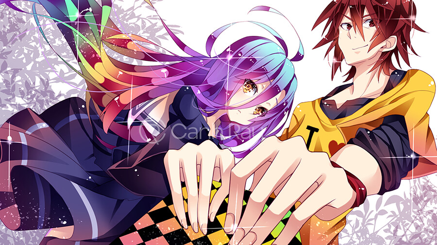
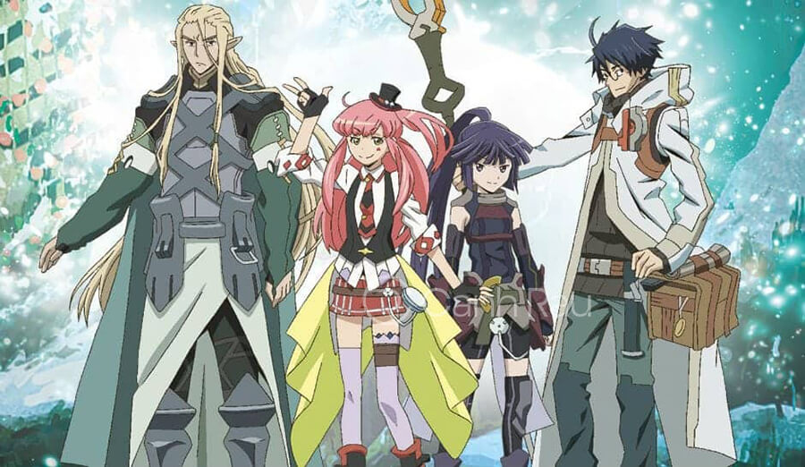
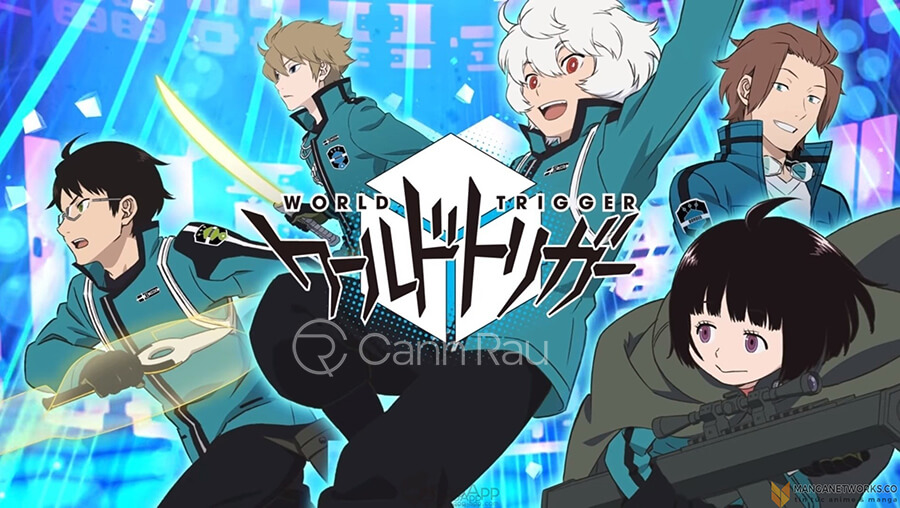
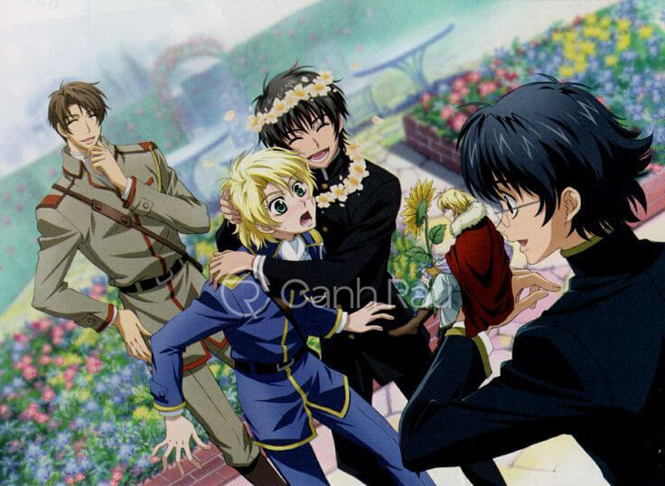
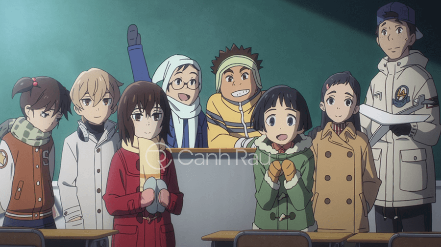
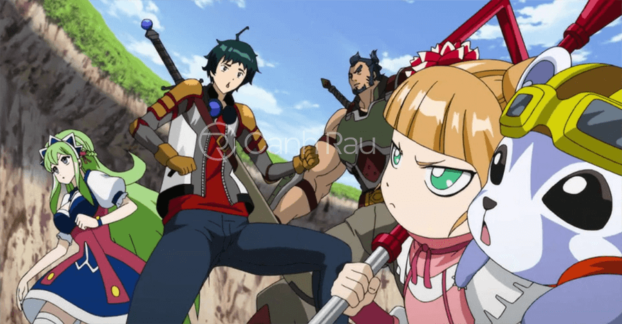
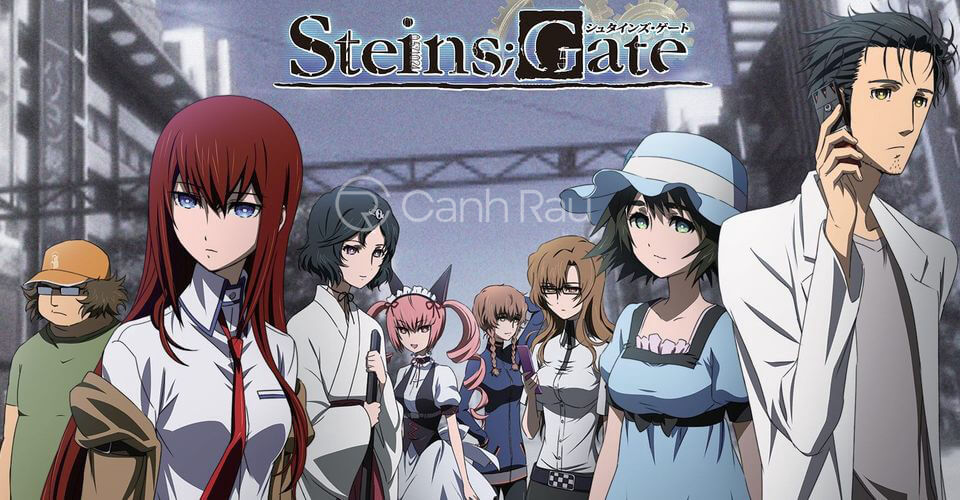
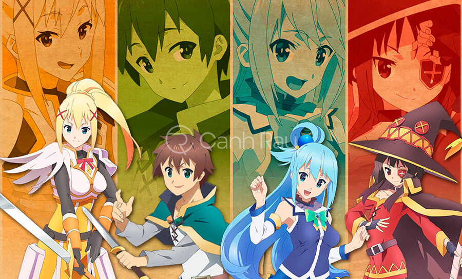
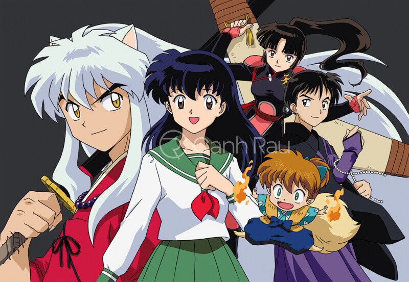
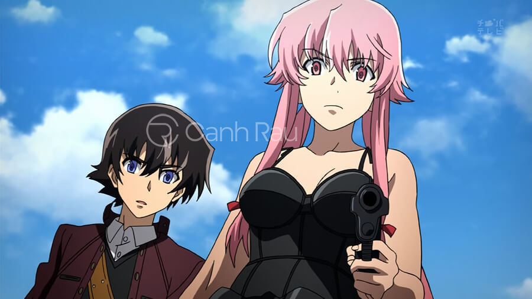

-No Game No Life là một bộ phim anime xuyên không kể về anh em Shiro và Sora, hai thiên tài nổi tiếng trong giới game thủ có nickname Kohaku. Họ thống trị tất cả các bảng xếp hạng của bất kỳ trò chơi nào với thành tích khủng. Shiro và Sora cho rằng mình sinh nhầm thế giới vì ngoài việc chơi game ra thì họ chẳng làm việc gì khác

Hai nhân vật chính Sora và Shiro
-Cuộc sống tưởng chừng tẻ nhạt sẽ kéo dài mãi mãi cho đến một ngày, vị thần tối cao – Tet đã gửi mail mời cả hai sang trải nghiệm một thế giới khác. Tại đó, tất cả mọi sự việc đều quyết định dựa trên thắng bại của game như: tiền bạc, đất đai, mạng sống…Nhiệm vụ của họ là phải đánh bại 16 tộc để chiếm lấy quân cờ chủng tộc, sau đó đọ tài cao thấp với Tet.
-Kết nối chân trời cũng là một bộ phim anime xuyên không có nội dung cực kỳ hấp dẫn, sau khi phát sóng đã nhận được nhiều tình cảm từ khán giả. Câu chuyện mở đầu bằng sự việc 30.000 game thủ bị mắc kẹt trong thế giới trực tuyến ảo – Elder Table. Đó là Thế giới của kiếm và ma thuật – nơi mà bất cứ game thủ nào cũng muốn chinh phục. Tuy nhiên, khi thế giới đó có thật thì lại biến thành ác mộng của bất kỳ ai.

Anime hấp dẫn Log Horizon
-Shiroe – nhân vật chính của phim, một game thủ vụng về đã tìm cho mình hai đồng đội là Naotsugu và Akatsuki. Họ bắt tay hợp tác để cùng nhau vượt qua khó khăn tại nơi khủng khiếp đó. Những thử thách nào đang chờ họ phía trước, liệu họ có duy trì được sự sống để quay về thế giới thực của mình. Hãy theo dõi hết bộ phim này để có lời giải đáp.
-World Trigger được chuyển thể từ bộ manga nổi tiếng cùng tên của tác giả Tsunemi Aosa. Bộ anime này kể về thành phố Mikado với sự kiện cánh cửa bí ẩn mở ra dẫn đến một thế giới song song khác. Từ đó, bọn quái vật – Neighbors xuất hiện, chúng nhăm nhe xâm lăng, chiếm đoạt thành phố.

World Trigger – phim hay không nên bỏ lỡ
-Một tổ chức có tên là Border được thành lập với nhiệm vụ bảo vệ an nguy cho con người. Tổ chức này đã chiếm đoạt được Triggers – công nghệ vũ khí tân tiến của Neighbors, sau đó khai thác và phát triển thêm để chống lại chúng. Kỷ nguyên Trigger là bộ anime thuộc thể loại Isekai hấp dẫn với nhiều tình tiết kịch tính. Nếu bạn đang phân vân không biết lựa chọn bộ phim anime lạc vào thế giới khác nào thì đây sẽ là một gợi ý tuyệt vời.
-Kyo Kara Maoh nói về cậu học sinh Shibuya Yuuri, từ đầu đến chân rất bình thường chỉ riêng cái tên hơi nữ tính một chút. Một hôm, Yuuri giải cứu người bạn cùng trường khỏi đám côn đồ, trớ trêu lại bị chúng ấn đầu vào bồn cầu trong nhà vệ sinh nữ. Nào ngờ, bồn cầu đó chính là cánh cửa đưa cậu xuyên không sang một thế giới khác.

Anime Ma vương dễ thương
-Cuộc sống thay đổi từ đây, ở thế giới mới cậu được tiết lộ mình là ma vương bởi bộ dạng đen từ đầu đến chân. Yuuri trở thành người cầm đầu vương quốc quỷ Mazoku, gánh vác trách nhiệm ngăn chặn cuộc chiến giữa quỷ và loài người. Kyo Kara Maoh là một bộ phim anime chuyển sinh sang thế giới khác với nhiều thước phim đẹp mắt, cốt truyện hấp dẫn, đem đến nhiều cung bậc cảm xúc cho người xem.
-Thị Trấn Nơi Mình Tôi Lưu Lạc được chuyển thể từ bộ truyện tranh nổi tiếng cùng tên của nhà văn Sanbe Kei. Bộ phim anime xuyên không này kể về Fujinuma Satoru 29 tuổi – một thanh niên trẻ kiêm nhà sác tác truyện manga. Anh có khả năng đặc biệt, có thể quay trở lại thời điểm trước khi cái chết xảy ra để giúp đỡ sinh mạng của rất nhiều người.

Phim Thị trấn nơi mình tôi lưu lạc
-Một hôm, mẹ của Satoru kể cho anh về câu chuyện của kẻ giết người từ 18 năm trước. Không lâu sau đó thì mẹ anh bị sát hại trong chính ngôi nhà của mình. Đồng thời, Satoru cũng xuyên không quay trở lại thời điểm đang là học sinh tiểu học. Câu chuyện ly kỳ tiếp tục diễn ra như thế nào, Satoru có thay đổi được vận mệnh, cứu sống mẹ mình và điều tra ra kẻ giết người kia. Hãy đón xem anime xuyên không này để có lời giải đáp.
-Thế Giới Ảo là bộ phim anime có chủ đề lạc vào thế giới khác, dựa trên trò chơi trực tuyến Ixion Saga của nhà phát hành Capcom. Bộ phim kể về anh chàng Kon Hokaze vô cùng mê game, đặc biệt là trò chơi thuộc thể loại MMORPG. Một hôm, anh nhận được yêu cầu từ nhân vật nữ trong game rồi bị cuốn vào thế giới của Mira.

Các nhân vật trong phim Thế giới ảo
-LTại đây, Hokaze gặp vô vàn rắc rối và nguy hiểm và cứu được vị công chúa thoát khỏi những kẻ tấn công. Cậu rất muốn thoát khỏi nơi này, nhưng không biết quay trở về thế giới của mình bằng cách nào. Hokaze quyết định đi theo công chúa để bảo vệ cô, với mong muốn sẽ tìm ra giải pháp. Thế Giới Ảo là bộ phim anime hay có nhiều tình tiết gây cấn, đan xen với yếu tố hài hước mang đến nhiều cung bậc cảm xúc cho khán giả.
-Steins;Gate là một bộ phim anime xuyên không kể về nhà bác học điên – Okabe Rintaro cùng các người bạn của mình thành lập nhóm Future Gadget Laboratory. Trong lần tham dự hội nghị về du hành thời gian, cậu đã phát hiện ra khả năng gửi tin nhắn về quá khứ bằng chiếc điện thoại mà nhóm đang phát triển thông qua lò vi sóng.

Anime Nghịch loạn thời không
-Trong quá trình nghiên cứu, nhóm của Okabe bị tổ chức SERN theo dõi nhằm chiếm đoạt thành quả. Shiina Mayuri – thành viên trong nhóm bị chúng sát hại. Obake ngược dòng thời gian để ngăn chặn cái chết của bạn mình nhưng đều thất bại. Sự hỗn loạn giữa quá khứ và hiện tại, chính và tà, Obake và những người bạn phải tìm cách chống lại âm mưu nguy hiểm của tổ chức SERN.
-Anime chuyển sinh sang thế giới khác – KonoSuba kể về cậu học sinh mê game, nghiện truyện tên là Satou Kazuma. Vì muốn cứu cô gái tưởng như sắp bị chiếc máy cày đi với tốc độ rùa bò tông trúng, cậu đã phải chào đón cái chết khá thương tâm.

Anime hấp dẫn KonoSuba
-Ngỡ rằng sống trên đời chỉ được bấy nhiêu năm, khi cậu tỉnh dậy lại thấy mình đang ở một thế giới kỳ lạ và gặp cô gái tự xưng là nữ thần. Cô cho cậu hai lựa chọn: một là đi lên thiên đàng, hai là bắt đầu cuộc sống ở thế giới mới. Kazuma đã lựa chọn điều thứ 2, nhiệm vụ của cậu tại đây là tiêu diệt ma vương tàn ác.
-Người bạn đồng hành cùng cậu chẳng ai khác chính là vị nữ thần kia, làm thì ít mà gây rối thì nhiều. Cuộc phiêu lưu đầy thú vị của Kazuma bắt đầu, cậu không những phải lo cái ăn cái mặc, lo phòng ngừa kẻ địch mà còn phải giải quyết hậu quả mà cái đuôi nhỏ gây ra.
-Khuyển Dạ Xoa là phim hoạt hình Nhật Bản được yêu thích nhất mọi thời đại. Anime xuyên không này có bối cảnh vào thời Chiến quốc đầy rẫy yêu quái, nguy hiểm. Inuyasha – một bán yêu đã tấn công một ngôi làng để cướp ngọc Tứ hồn. Tuy nhiên, anh đã bị pháp sư Kikyo phong ấn vào gốc cây đại thụ. Kikyo đã dặn em gái Kaede hỏa thiêu ngọc Tứ hồn chung với thân xác khi cô qua đời.

Inuyasha – anime hay không nên bỏ lỡ
-550 năm sau, con mèo của nữ sinh Kagome Higurashi bị yêu quái rết chui ra từ giếng trong nhà tấn công. Cô muốn cứu chú mèo nhưng không may bị ngã xuống giếng rồi xuyên không về thời Chiến quốc. Kagome gặp được Inuyasha khi anh vẫn đang bị phong ấn, còn yêu quái rết thì vẫn bám theo cô nhằm cướp ngọc Tứ hồn. Kagome giải trừ phong ấn cho Inuyasha để tiêu diệt con quái vật kia, nhưng nào ngờ bị anh tấn công lại. Câu chuyện sẽ tiếp diễn ra sao, Kagome có khống chế được Inuyasha và tiêu diệt yêu quái rết hay không? Hãy cùng mình xem ngay nhé.
-The Future Diary kể về Amano Yukiteru – cậu học sinh nhút nhát, sống khép kín. Cậu luôn quát sát mọi việc xung quanh rồi ghi chép vào chiếc điện thoại của mình. Người bạn duy nhất của Amano là Deus Ex Machina, thực chất người bạn này do chính cậu tưởng tượng ra.

Cặp đôi Amano và Yuno
-Đến một ngày, Deus bước ra khỏi trí tưởng tượng và biến điện thoại của Amano thành nhật ký có khả năng dự đoán tương lai. Cậu và 11 người khác bị kéo vòng cuộc chiến sinh tử do Deus tổ chức, mục đích là tìm ra người thừa kế ngai vàng. Amano gặp gỡ cô bạn xinh đẹp Gasai Yuno, người luôn yêu và đứng về phía cậu điều kiện. Hai người vừa là đồng minh, vừa cặp đôi yêu nhau sâu đậm, vai kề vai cùng tiêu diệt chủ nhân nhật ký tương lai khác.